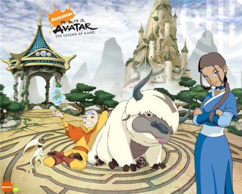

Аватар, легенда об Аанге
Мир разделен на четыре народа: Водные племена, королевство Земли, Воздушные кочевники и Огненная нация. Представители каждого народа обладают способностями управления своей стихией и именуют себя магами Воды, Земли, Воздуха или Огня. Только Аватар является властелином всех четырех стихий. Его роль заключается в поддержке баланса между народами и сохранении мирового порядка.
Однажды предводитель Огненной нации Хозяин Огня развязал войну с целью подчинить себе остальные народы. Отвественность за спасение мира легла на плечи двенадцатилетного мальчика, мага Воздуха по имени Аанг, который узнал, что он Аватар. Аанг отправляется в опасное путешествие вместе со своими отважными друзьями из племени Воды, Катарой и ее братом Соккой...
Вода
Катара и её брат Сокка находят Аанга с Аппой и освобождают их из айсберга. Аанг признаётся им, что он — аватар, но пока владеет только родной стихией — воздухом. Ему необходимо обучиться магии ещё трёх стихий в определённом порядке, а именно: вода, земля и огонь. Втроём они решают отправиться в Северное племя воды, где Аанг смог бы найти себе учителя магии следующей по циклу стихии. По пути они посещают Южный храм воздуха, где аватар узнаёт об истреблении своего народа и находит там последнего крылатого лемура Момо, которого берёт с собой.
На протяжении всего путешествия Аанга и его друзей преследует принц Зуко, изгнанный сын хозяина огня Озая, стремящийся пленить аватара и тем самым вернуть себе честь и уважение. Зуко путешествует вместе со своим дядей Айро — бывшим генералом армии народа огня, старшим братом Озая.
В конце сезона адмирал армии народа огня Джао нападает на Северное племя воды, стремясь убить физическое воплощение Духа Луны, чтобы лишить тем самым магов воды их силы. Аватару удаётся разрушить его планы. Тем временем хозяин огня объявляет своего сына и брата предателями и посылает свою дочь Азулу схватить их.
Земля
Аватар и его друзья покидают Северное племя воды, чтобы отыскать учителя магии земли. Им оказывается слепая девочка по имени Тоф Бейфонг. Тем временем Зуко и Айро пытаются начать новую жизнь на территории Царства земли. Найдя в пустыне Великую Библиотеку, Аанг с друзьями узнают о предстоящем солнечном затмении, которое должно лишить магов огня их силы, сделав их беззащитными. Они решают добраться до города Ба-Синг-Се, столицы Царства земли, и рассказать об этом царю. Но Азула при помощи тайной полиции города устраивает переворот и захватывает Ба-Синг-Се, а также уговаривает Зуко вновь встать на сторону народа огня. Азула ударом молнии убивает Аанга, когда тот находится в состоянии аватара, но Катара возвращает его к жизни с помощью магической воды, полученной у Северного племени воды.
Огонь
Аватар, его друзья и многие другие персонажи, с которыми они повстречались в предыдущих сезонах, воспользовавшись затмением, устраивают небольшое вторжение в страну народа огня, чтобы победить Озая, но их планы рушатся, и им приходится отступать. Тем временем Зуко переосмысливает свои поступки, бросает вызов отцу и решает научить Аанга магии огня, вступив в команду аватара, которая принимает его.
В финале сезона Озай пытается уничтожить всех представителей Царства земли, чтобы навсегда покончить с их разновидностью магии. Хозяин огня выбирает для этого момент, когда в небе пролетает космический объект — комета Созина, чьё появление вызывает увеличение способностей магов огня. Вместе с эскадрильей военных дирижаблей он отправляется к Царству земли. Друзья Аанга уничтожают эскадрилью, а сам аватар вступает в схватку с хозяином огня, во время которой впадает в состояние аватара и лишает Озая магии, при этом не убивая его. В последней сцене сериала команда аватара празднует победу в чайной Айро, открытой им в Ба-Синг-Се.